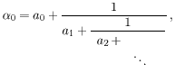
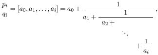
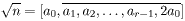

ili jednostavnije α0 = [a0, a1, a2, ...].
zovemo i-ta konvergenta od α0. Vrijedi:
pn =
an pn -1 +
pn -2, p0 =
a0, p1 =
a0a1 + 1;
qn =
an qn -1 +
qn -2, q0 = 1, q1 = a1.

i vrijedi ai = ar -i za i = 1, ... , r - 1. Npr. √7 = [2, 1, 1, 1, 4].U tom slučaju, razvoj u verižni razlomak može se dobiti primjenom sljedećeg algoritma:
a0 =
⌊√n⌋, s0 = 0,
t0 = 1,
si+1 = ai
ti - si,
ti+1 = (n -
si+12)/ti,
ai =
⌊(a0 +
si)/ti⌋
za i ≥ 0.
pi2 - n qi2 = (-1)i+1 ti+1 (4.4)
za i ≥ 0, te također si < √n, ti < 2√n.Metodu faktorizacije pomoću verižnih razlomaka uveli su Lehmer i Powers, a usavršili Brillhart i Morrison.
Uvedimo oznaku ti* = (-1)i ti. Pretpostavimo da smo pronašli produkt t*k1+1 t*k2+1 · · · t*km+1 koji je potpun kvadrat, recimo jednak z2. Tada iz (4.4) slijedi
p2k1 p2k2 · · · p2km ≡ z2 (mod n). (4.5)
Naravno, u (4.5) možemo svaki pki zamijeniti s (pki mod n) ili s njegovim najmanjim ostatkom po apsolutnoj vrijednosti.
Primjer 4.6: Neka je n = 9073. Računamo:
| i | 0 | 1 | 2 | 3 | 4 | 5 | |
| si | 0 | 95 | 49 | 90 | 92 | 82 | |
| ti | 1 | 48 | 139 | 7 | 87 | 27 | |
| ai | 95 | 3 | 1 | 26 | 2 | 6 | |
| pi | 95 | 286 | 381 | 1119 | 2619 | 16833 |
Očito je t1* · t5* = 362. Stoga je
p02 p42 = (95 · 2619)2 ≡ 38342 ≡ 362 (mod 9073).
Računamo: (3834 + 36, 9073) = (3870, 9073) = 43. I zaista, 9073 = 43 · 211.
Jasno je da metodu verižnog razlomka možemo shvatiti kao
specijalni slučaj metode faktorske baze. Ovdje u bazu
B
uzimamo broj -1, te sve proste brojeve koji se pojave u
faktorizaciji ti-ova. U ovom slučaju je
Brillhart i Morrison su 1970. godine metodom verižnog razlomka
faktorizirali Fermatov broj
22 + 1 = 59 649 589 127 497 217 . 5 704 689 200 685 129 054 721.
U stvari, oni su koristili jednu modifikaciju originalne metode. Naime, umjesto razvoja od √n, oni su koristili razvoj od √(λn) za prikladno odabrani prirodni broj λ. U konkretnom slučaju za n = 22 + 1, uzeli su λ = 257.
| Web stranica kolegija Kriptografija | Andrej Dujella - osobna stranica |